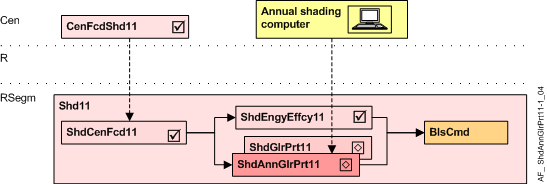

年度遮阳防眩光保护 11 (ShdAnnGlrPrt11)
Overview
应用功能》Annual shading anti-glare protection 11" (ShdAnnGlrPrt11）包含眩光防护功能并与年度遮阳计算机通信。
如果相关百叶窗的条件与幕墙其余部分的条件不同，着色计算机将覆盖此 AF 的输出。
注意：默认情况下，当房间有人时，眩光保护处于活动状态（RShdCoo11 中的配置）

岑 | 中央职能 |
CenFcdShd11 | Central facade shading for automatic 11 |
R | 房间 |
RSegm | 房间段 |
ShdCenFcd11 | Shading central facade function 11, for automatic |
ShdEngyEffcy11 | Shading energy efficiency 11, thermal protection |
ShdGlrPrt11 | Shading anti-glare protection 11 |
ShdAnnGlrPrt11 | Annual shading anti-glare protection 11 |
BlsCmd | Blinds command |
Function
AF 计算所需的眩光保护位置，并准备必要的百叶窗命令。
为了正确操作，该 AF 需要存在带亮度传感器的 AF ShdCenFcd11。
眩光防护位置基于：
- the brightness on the façade, calculated in the central facade function (AF CenFcdShd11) as a multistate value GlrPrt (None, Hold direct, High direct, Hold indirect, High indirect, Dark)
- the glare protection mode (GlrPrtMod) configured to the needs of the room and the user.
- the information from the annual shading computer. The shading computer overwrites the output of this AF if the conditions of the associated blind differ from the conditions of the rest of the facade sector.
Evaluation of a resulting glare protection condition from CenFcdShd11 and Annual Shading Computer:
由此产生的眩光防护条件 | 来自年度着色计算机 | ||||
|---|---|---|---|---|---|
No | From CenFcdShd11 | 没有任何 | 间接 | 直接的 | 直接和间接 |
1 | None | None | None | None | None |
2 | Hold direct | None | Hold | Hold | Hold |
3 | High direct | None | High indirect | High | High indirect |
4 | Hold indirect | None | Hold | None | Hold |
5 | High indirect | None | High | None | High |
这Anti-glare protection mode(GlrPrtMod) 根据眩光防护条件定义百叶窗位置（None, Hold, High).
已配置Anti-glare protection mode | 防眩光条件下的百叶窗位置 | |||
|---|---|---|---|---|
No | 姓名 | None | Hold | High, High indirect |
1 | Down / Open / Up | Move up | Open slats | Move down |
2 | Sun tracking / Open / Up | Move up | Open slats | Sun tracking |
3 | Down / No operation / Up | Move up | No operation | Move down |
4 | Sun tracking / No operation / Up | Move up | No operation | Sun tracking |
5 | Down / No operation / No operation | No operation | No operation | Move down |
6 | Sun tracking / No operation / No operation | No operation | No operation | Sun tracking |
- For resulting glare protection = High indirect, the sun tracking position depends on the configured direction of the reflecting area
- Vertical: sun tracking position according to CenFcdShd11
- Horizontal: sun tracking position according to a configurable value
- Criteria for "High"(glare protection required):
"Sun tracking" is used to allow maximum daylight even during glare protection
"Move down" is used instead of "Sun tracking", when - no sun tracking is possible due to the design of the façade product
- sun tracking does not cover all places in the room correctly or
- the user does not want sun tracking (frequent movements)
- Criteria for "Hold" (Change from glare to no-glare for a short duration):
"Open slats" is used only for venetian blinds. Slats are opened for "Hold". This allows maximum daylight, but results in some short movements.
"No operation" is used for awnings or when the user prefers to avoid movements. - Criteria for "None" (Change from glare to no-glare for a long duration):
"Move up" is used to get maximum daylight, but results in some movements.
"No operation" is used to avoid any movement. The blinds or awnings have to be opened manually or via time scheduler.
- The Glare evaluation mode (GlrEvalMod) can be selected as follows:
- Sun position: The AF uses the sun position only; the information of the annual shading computer is ignored.
- Annual shading: The annual shading computer overwrites the glare protection condition with None if a window is shaded by an obstacle (e.g. a hill or a building).
- Anti-glare indirect: The annual shading computer influences the glare protection condition with High if a window is hit by reflected light (e.g. from a lake or from a building).
- Annual shading & Anti-glare indirect.
这behavior of the AF after / without annual shading information(AnnShdEndStrgy) 可以配置：To noneorTo hold.
当年度遮蔽计算机不再报告特殊情况（反射光或障碍物遮蔽）或信息丢失时，它适用。
这direction oft he light reflecting area可以配置：
Vertical（其他有玻璃幕墙的建筑物）或Horizontal（湖泊或雪）
这blinds position in the event of communication failure（对于年度着色计算机，ComFltStrgy）可以配置：Sun position, Down, Up, No operation, Open slats.
Interface (to the annual shading computer)
界面 | 描述 | 类型 | 参考号 | 拥有者 |
|---|---|---|---|---|
AnnShd | Annual shading 1:Undefined | MTrgVal | ● | - |
该值由年度着色计算机写入 BACnet 对象：
- In case of a change
- Cyclically every 5 minutes
Configuration
 Parameters
Parameters
描述 | 范围 | 默认值 |
|---|---|---|
Anti-glare protection mode 1:Down / Open / Up | GlrPrtMod | 2:Sun tracking / Open / Up |
Glare evaluation mode 1:Sun position | GlrEvalMod | 1:Sun position |
Annual shading end of active strategy 0:To none | AnnShdEndStrgy | 0:To none |
Reflection 0:Vertical | Refc | 0:Vertical |
Communication failure strategy 1:Sun position | ComFltStrgy | 1:Sun position |
Blinds command for horizontal reflection 1:Move up | CmdHrzRefc | 8:Go to position |
Blinds position number for horizontal reflection 1:P1: Visual protection | PosNrHrzRefc | 2:P2: Anti-glare, sun position low |
Blinds height for horizontal reflection | HgtHrzRefc | 0 [%] |
Slat angle for horizontal reflection | AglHrzRefc | 0 [%] |
Interface
没有任何。
Engineering and commissioning
- The sun tracking function and brightness thresholds are configured in AF CenFcdShd11.
- For correct operation, the AF requires the existence of AF ShdCenFcd11 with a brightness sensor.
Troubleshooting
验证 CFC 中图表的功能：所有评估值都可以在图表输出上看到。